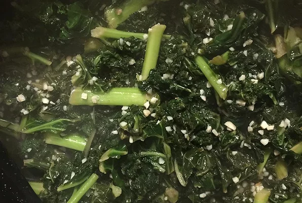

Sautéed Kale with Garlic

Description
A fast and easy way to prepare kale.
Ingredients
- 1 bunch kale
- 2 tablespoons olive oil
- 4 cloves garlic, minced
Steps
- Tear the kale leaves into bite-size pieces from the thick stems; discard the stems.
- Heat the olive oil in a large pot over medium heat.
- Cook and stir the garlic in the hot oil until softened, about 2 minutes.
- Add the kale and continue cooking and stirring until the kale is bright green and wilted, about 5 minutes more.